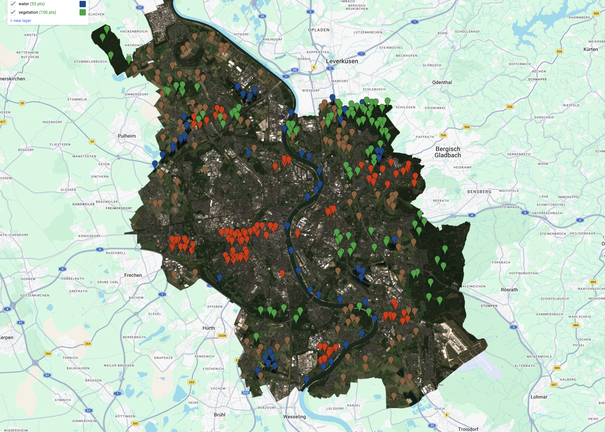
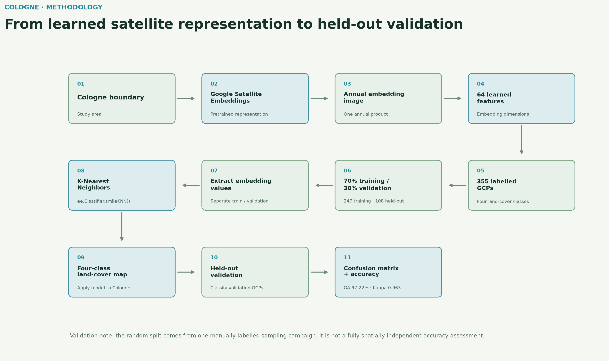
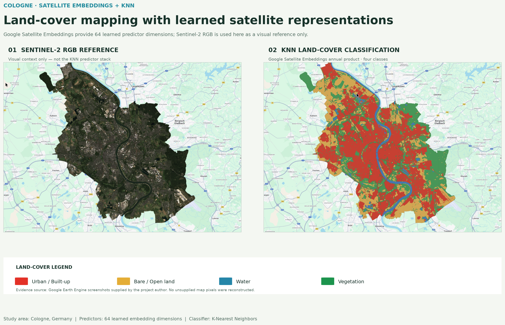
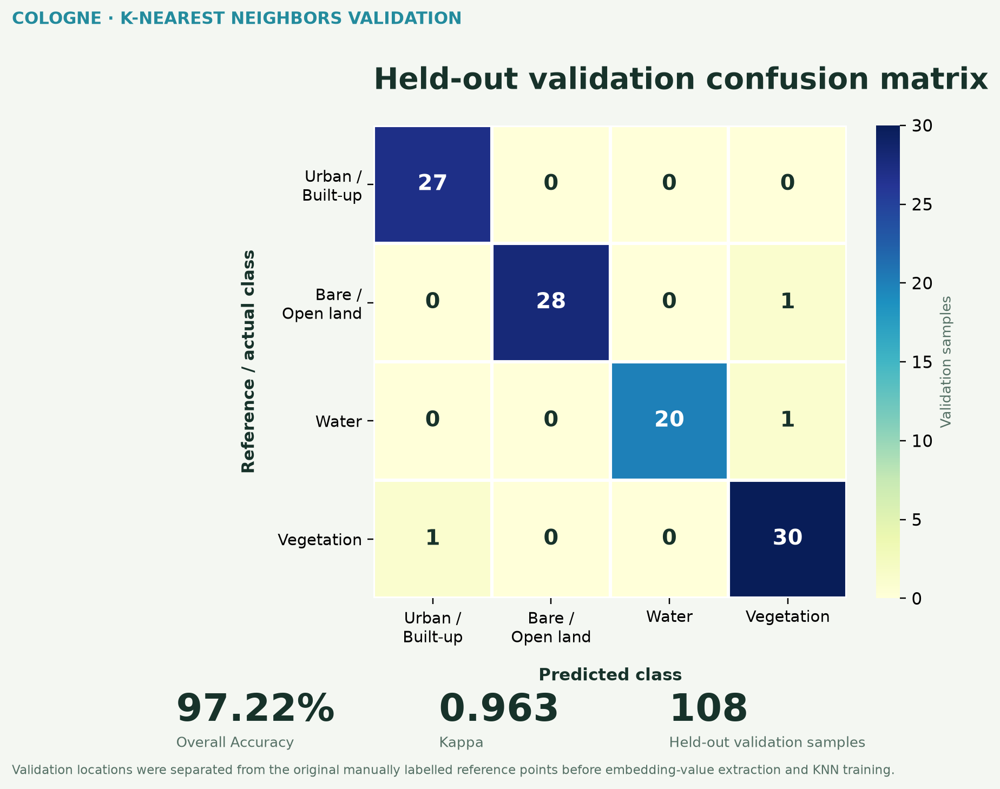
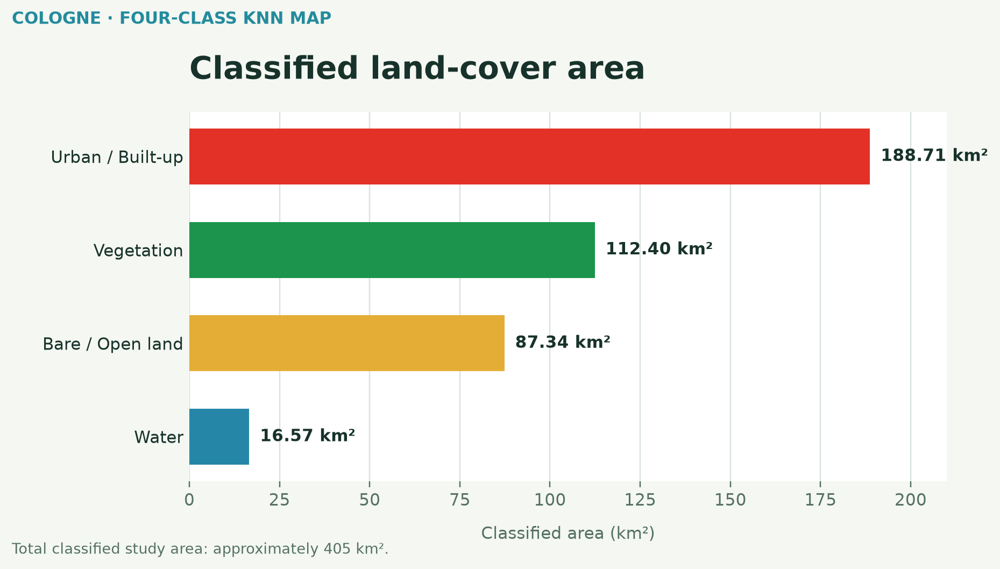

Embedding-based four-class land-cover mapping
This project evaluates a modern land-cover classification workflow using Google Satellite Embeddings as pretrained geospatial features. A K-Nearest Neighbors classifier distinguishes urban / built-up land, bare / open land, water and vegetation across Cologne, Germany.
Data and learned features
One 2025 annual image from GOOGLE/SATELLITE_EMBEDDING/V1/ANNUAL supplies 64 learned embedding dimensions to the classifier. Sentinel-2 RGB is used only as a visual reference layer; it is not the direct KNN predictor stack.
Training and validation data
Four manually labelled classes were represented by 355 original reference points. A reproducible random 70% / 30% split using seed 42 produced 247 training GCPs and 108 held-out validation GCPs before embedding values were extracted.


Methodology
Embedding values were sampled separately for the training and validation locations. The classifier was implemented with ee.Classifier.smileKNN() using the Earth Engine defaults; no additional KNN hyperparameters were explicitly configured. The trained classifier was applied across the Cologne study area and evaluated against the held-out random validation subset.


RGB reference and KNN map
The map comparison pairs the Sentinel-2 RGB reference with the final four-class KNN classification. The images are clean crops of the supplied Google Earth Engine outputs; no raster content has been reconstructed.


Accuracy assessment


| Class | Producer Accuracy | User Accuracy |
|---|---|---|
| Urban / Built-up | 100.0% | 96.4% |
| Bare / Open Land | 96.6% | 100.0% |
| Water | 95.2% | 100.0% |
| Vegetation | 96.8% | 93.8% |
Producer accuracy describes how well actual reference samples of a class were captured; user accuracy describes how reliable a predicted class is.
Classified land-cover area
The four classes cover approximately 405 km² of the classified study area. These are map-derived class totals, not independent reference measurements.


Why embeddings are interesting
Traditional workflows supply raw spectral bands and manually designed indices to a classifier. Here, each location is represented by a 64-dimensional learned satellite embedding from Google's precomputed annual embedding product, and KNN operates directly on that feature representation. This allows a comparatively simple classifier to use richer geospatial features without treating the embedding dimensions as individual spectral bands.
The embedding-based KNN model achieved strong class separation in this held-out subset: urban reference samples were all correctly identified, while the remaining errors were one bare / open sample classified as vegetation, one water sample classified as vegetation and one vegetation sample classified as urban.
Limitations and tools
The validation points come from the same manually labelled sampling campaign as training points and were split randomly rather than spatially independently. The high validation accuracy should therefore not be interpreted as guaranteed map-wide accuracy. KNN performance can also depend on neighbourhood settings and feature-space structure. This is a portfolio and research demonstration, not an authoritative land-cover dataset.
Google Earth Engine · Google Satellite Embeddings · K-Nearest Neighbors · Sentinel-2 RGB reference · JavaScript · Python · Matplotlib
Learning attribution: methodology informed by the Spatial Thoughts End-to-End Google Earth Engine course by Ujaval Gandhi.